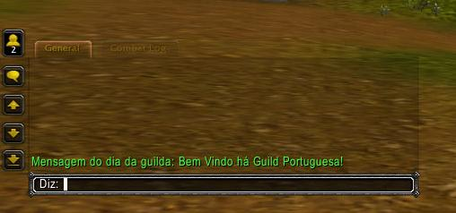
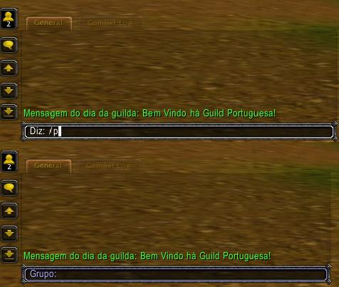
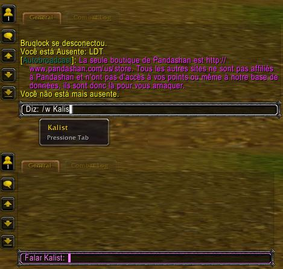
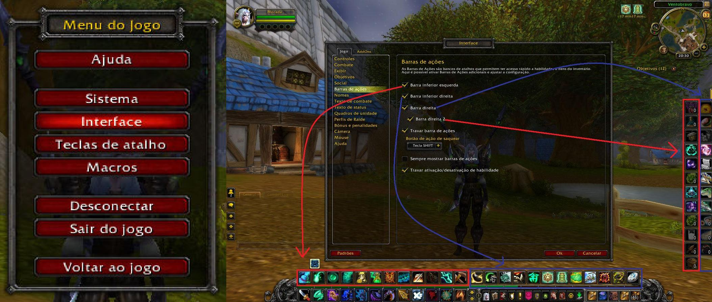
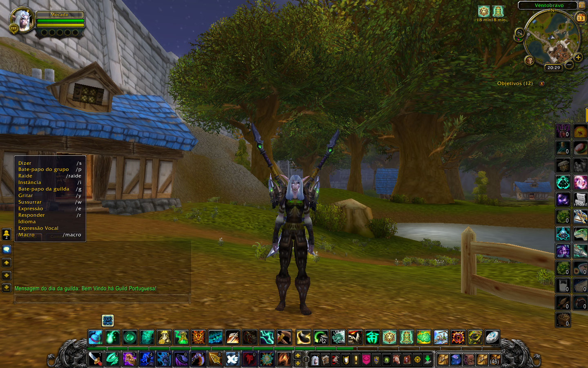

Para abrir o chat clique "ENTER"

Para falar em grupo, no chat insira "/P" de seguida "ESPACE"

Para falar para alguém, no chat insira "/w" <"nome do jogador">

Caso esteja sem espaço na zona de feitiços e pretenda ter mais espaço, vá ao "ESC" de seguida "Interface" e selecione a opção "Barras de ações":

Alguns atalhos do jogo:
- A tecla "M", abre o Mapa;
- A tecla "O", abre a sua Lista de Amigos;
- A tecla "B", abre a mala (inventário) principal, caso queira abrir todas duma só vez, precione o SHIFT e de seguida o "B";
- A tecla "C", abre as Informações do Jogador;
- A tecla "L", abre as Missões;
- A tecla "P", abre o seu livro de habilidades.
Ajudas Avançadas
- Caso o jogo comece a Breckar ou a ter erros, em vez de sair da personagem e voltar a entrar.. escreva no chat: "/reload" ou "/consolereloadui"
Caso queira explorar o que a sua personagem é capaz de fazer vá a.. e explore :P
